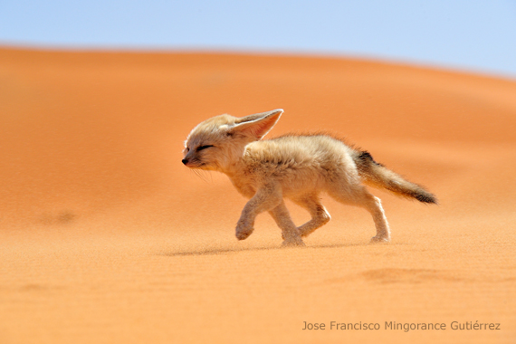

Staying Alive in the Desert.
As their name implies desert foxes or Fennecs live in the desert, tempatures can reach up to 100 degrees ferenhight! How do they keep cool?
Feenecs have large long ears, that are half the length of their body. Air rushes through their ears which cools them off.
The desert is full of predators that like to eat Fennecs! How do they hide? Fennecs have fur that resemble the desert sand. This fur is called camouflage and helps them to blend into the sand so they won't get eaten.
Try at home
On a hot day at home, standing under a cealing fan raise your hands above your head and see if you can feel the cool air rushing over your head. Feels good right? This is exactly the same way Desert foxes stay cool in the heat only they use their ears instead of their hands.